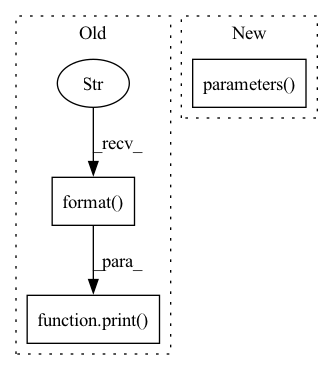

Pattern ID :13388
Before Change
loss_sum += loss.detach().item()
print( "Client[{}] Traning. Epoch {}/{}, Loss {:.4f}, Time {:.2f}s".
format( id, epoch + 1, epochs, loss_sum,
time() - time_begin))
return SerializationTool.serialize_model(model)
def train(self, model_parameters, epochs, lr, batch_size, id_list, cuda):
Train local model with different dataset according to id in id_list.After Change
SerializationTool.deserialize_model(self._model, model_parameters)
epochs = 5
criterion = torch.nn.CrossEntropyLoss()
optimizer = torch.optim.SGD(self._model.parameters() , lr=0.1)
self._model.train()
for _ in range(epochs):In pattern: SUPERPATTERN
Frequency: 5
Non-data size: 3
Instances Fragment ID: 45141265
Project Name: smilelab-fl/fedlab
Commit Name: 16befdf9173a4b4f4430f456b5353765c6d4d3e3
Time: 2021-08-08
Author: 928255708@qq.com
File Name: fedlab/core/client/serial_trainer.py
M Class Name: SerialTrainer
N Class Name: SerialTrainer
M Method Name: _train_alone(4)
N Method Name: _train_alone(8)
M Parent Class: ClientTrainer
N Parent Class: ClientTrainer
M File Name: fedlab/core/client/serial_trainer.py
N File Name: fedlab/core/client/serial_trainer.py
M Start Line: 102
M End Line: 137
N Start Line: 98
N End Line: 119
Before Change
// resume from a checkpoint
if args.checkpoint and os.path.isfile(args.checkpoint):
print( "=> loading checkpoint "{}"".format( args.checkpoint))
checkpoint = torch.load(args.checkpoint)
if isinstance(checkpoint, dict) and "state_dict" in checkpoint:
model.load_state_dict(checkpoint["state_dict"])
else:After Change
pretrained=args.pretrained)
print("Model %s created, param count: %d" %
(args.model, sum([m.numel() for m in model.parameters() ])))
// load a checkpoint
if not args.pretrained: Fragment ID: 45141266
Project Name: feng-lab/pytorch-image-models
Commit Name: 0bc50e84f8c12529d781c6c46d3c927f335cf349
Time: 2019-04-10
Author: rwightman@gmail.com
File Name: inference.py
M Class Name: AnonimousClass
N Class Name: AnonimousClass
M Method Name: main(0)
N Method Name: main(0)
M Parent Class:
N Parent Class:
M File Name: inference.py
N File Name: inference.py
M Start Line: 45
M End Line: 68
N Start Line: 45
N End Line: 62
Before Change
"You may see unexpected behavior when restarting "
"from checkpoints.")
print( "Use GPU: {} for training".format( args.gpu))
cudnn.benchmark = True
// Data loading code
normalize = transforms.Normalize(mean=[0.485, 0.456, 0.406], std=[0.229, 0.224, 0.225])After Change
// define optimizer
optimizer = SGD(
classifier.get_parameters() +
[{"params": theta.parameters() , "lr_mult": 0.1} for theta in thetas],
args.lr, momentum=args.momentum, weight_decay=args.wd, nesterov=True
)
lr_sheduler = StepwiseLR(optimizer, init_lr=args.lr, gamma=0.0003, decay_rate=0.75) Fragment ID: 45141268
Project Name: thuml/transfer-learning-library
Commit Name: 904ddf1c2173d282968c2eb2efac00a133583180
Time: 2020-04-29
Author: 13126830206@163.com
File Name: examples/jan.py
M Class Name: AnonimousClass
N Class Name: AnonimousClass
M Method Name: main(1)
N Method Name: main(1)
M Parent Class:
N Parent Class:
M File Name: examples/jan.py
N File Name: examples/jan.py
M Start Line: 40
M End Line: 86
N Start Line: 74
N End Line: 93
Before Change
"You may see unexpected behavior when restarting "
"from checkpoints.")
print( "Use GPU: {} for training".format( args.gpu))
cudnn.benchmark = True
// Data loading code
normalize = transforms.Normalize(mean=[0.485, 0.456, 0.406], std=[0.229, 0.224, 0.225])After Change
parameters = classifier.get_parameters()
if thetas is not None:
parameters += [{"params": theta.parameters() , "lr_mult": 0.1} for theta in thetas]
// define optimizer
optimizer = SGD(parameters, args.lr, momentum=args.momentum, weight_decay=args.wd, nesterov=True) Fragment ID: 45141269
Project Name: thuml/transfer-learning-library
Commit Name: a14c5201dda7a853703a470501d4b82b42d46182
Time: 2020-04-29
Author: 13126830206@163.com
File Name: examples/jan.py
M Class Name: AnonimousClass
N Class Name: AnonimousClass
M Method Name: main(1)
N Method Name: main(1)
M Parent Class:
N Parent Class:
M File Name: examples/jan.py
N File Name: examples/jan.py
M Start Line: 40
M End Line: 86
N Start Line: 74
N End Line: 95
Before Change
if len(cycle_losses_this_epoch) != 0:
print("Cycle Loss: {}".format(sum(cycle_losses_this_epoch) / len(cycle_losses_this_epoch)))
if len(bt_cycle_losses_this_epoch) != 0:
print( "BarlowTwins Loss: {}".format( sum(bt_cycle_losses_this_epoch) / len(bt_cycle_losses_this_epoch)))
print("Time elapsed: {} Minutes".format(round((time.time() - start_time) / 60)))
print("Steps: {}".format(step_counter))
net.train()
style_embedding_function.train()After Change
step_counter += 1
if step_counter == phase_1_steps:
// entering phase 2
for param in style_embedding_function.parameters() :
param.requires_grad = False
scaler.unscale_(optimizer)
torch.nn.utils.clip_grad_norm_(net.parameters(), 1.0, error_if_nonfinite=False) Fragment ID: 45141273
Project Name: digitalphonetics/ims-toucan
Commit Name: dc704bdc4e397c544561c3901c8b00035559d37f
Time: 2022-06-23
Author: florian.lux@ims.uni-stuttgart.de
File Name: TrainingInterfaces/Text_to_Spectrogram/FastSpeech2/fastspeech2_train_loop.py
M Class Name: AnonimousClass
N Class Name: AnonimousClass
M Method Name: train_loop(14)
N Method Name: train_loop(15)
M Parent Class:
N Parent Class:
M File Name: TrainingInterfaces/Text_to_Spectrogram/FastSpeech2/fastspeech2_train_loop.py
N File Name: TrainingInterfaces/Text_to_Spectrogram/FastSpeech2/fastspeech2_train_loop.py
M Start Line: 123
M End Line: 286
N Start Line: 141
N End Line: 233